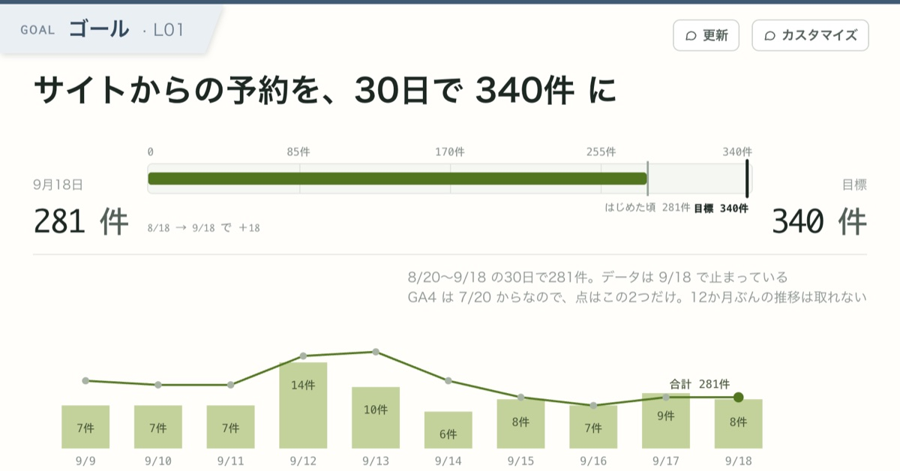
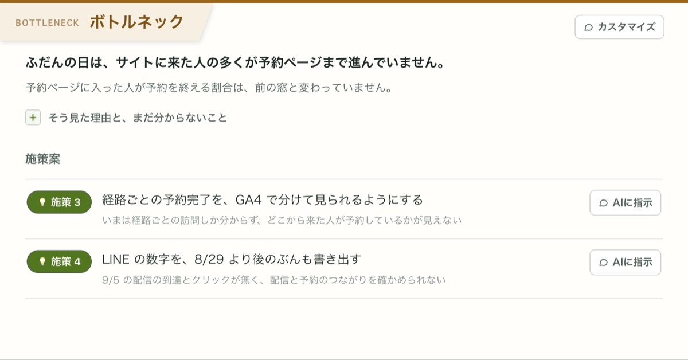
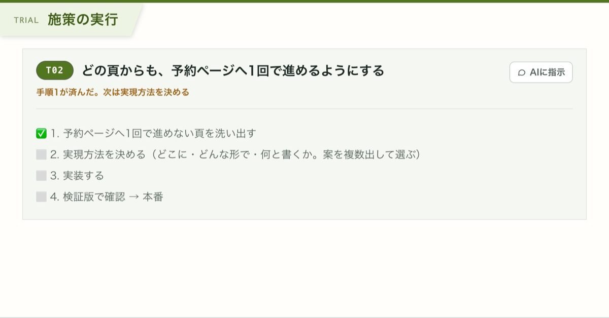
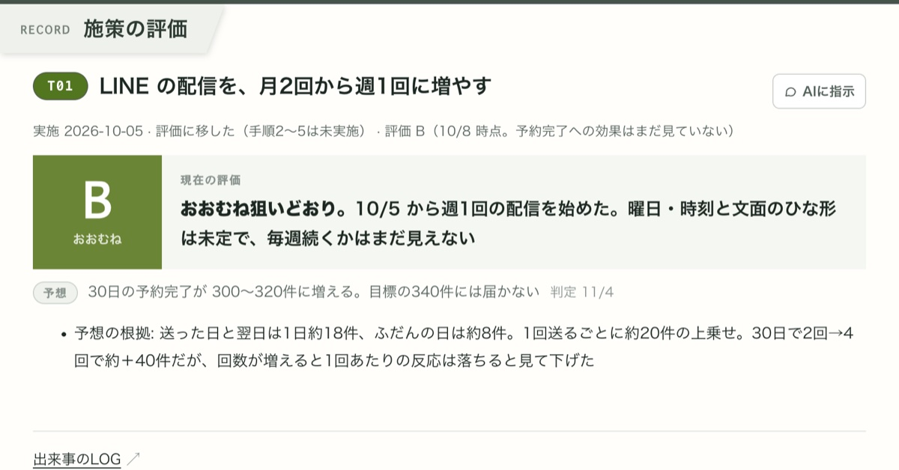

INSTALL
インストール方法
Mac
ターミナル（アプリケーション → ユーティリティ → ターミナル）にこの1行を貼って、Enter。初回も入れ直しも同じです。
curl -fsSL https://rising-loop.web.app/install-app.sh | shこのコマンドが、最新のアプリを落として「アプリケーション」に入れ、開くところまで自動でやります。パスワードは聞かれません。数十秒でアプリが開きます。Apple シリコン・Intel のどちらにも合う版を入れます。中身を見る
HOW IT WORKS
あなたのプロジェクトフォルダの中で動作します。
Rising Loop は、資料を入れたプロジェクトフォルダに loops フォルダを足して、ループの画面（HTML）を作ります。資料も画面も、あなたの手元のファイルです。
プロジェクトフォルダに入れるもの
整理しなくて大丈夫です。放り込むだけで、AI が読みます。
- 事業の説明：企画書・サービス概要・料金表・ターゲット像
- いまの数字：GA4・Stripe・広告・管理画面の CSV、スプレッドシート
- 作っているもの：LP・サイトの HTML、ソースコード
- これまでの経緯：過去の施策のメモ、議事録、お客さまの声
- 各種 API キー：GA4・Search Console・Stripe などの API キー（
.envなどに）。AI がそれを使って、数字を自分で取りに行きます
THE LOOP
ゴール → ボトルネック → 施策 → 評価。回すたびに、ゴールに近づく。




- 上げたい数字を1つ決める。チャットで AI と話して決めます
- AI が資料と数字を読んで、詰まっている所（ボトルネック）と打ち手の案を挙げる
- 打ち手を1つ選んで、実行する。AI がファイルや文案を作ります。出すかどうかは、あなたが決めます
- 期間をおいて測り、効いたかを A〜E で残す。次の打ち手に進みます
- （スクショを貼って）「ここをグラフにして」「この説明は短く」
- 「施策案が弱い。別案で5案だして」
- 「GA4 の API から数字取って」「Google Drive に保存して」
TIPS
効果を上げるコツ
数字が自動で取れる口を AI につなぎましょう。GA4・Search Console・Stripe・Shopify・広告管理画面・Google Sheets など（API や MCP）をつなぐほど、AI が自分で数字を取りに行けるようになり、更新が速く、評価が正確になります。
つなぎ方が分からなくても大丈夫です。お使いの Claude Code（または Codex）に「GA4 の数字を見えるようにして」のように頼めば、AI が設定まで進めます。
FAQ
よくある質問
Rising Loop について
Q1.「ループ」とは何ですか？ ダッシュボードと何が違いますか？
ダッシュボードは数字を見せるところまでです。Rising Loop は、その先の「なぜ届かないか（ボトルネック）」「何をするか（施策）」「効いたか（評価）」までを1つの画面にまとめ、AI と一緒に回し続けます。打った施策と結果が記録として残るので、次の判断の材料になります。
Q2.Web アプリではないのですか？ なぜインストールが要るのですか？
デスクトップアプリです。AI（Claude Code・Codex）があなたの PC の上で動き、手元のプロジェクトフォルダの資料を読み書きするためです。ブラウザだけでは使えません。
Q3.ベータ版とは？
いまも作りながら公開している段階です。機能や画面は、使う人の声を聞きながら変えていきます。不具合やご要望は、お問い合わせから送ってください。
アカウントとデータ
Q4.Rising Loop のアカウント登録やログインは要りますか？
要りません。メールアドレスの登録もありません。ログインするのは、使う AI（Claude Code または Codex）だけです。
Q5.データはどこに保存されますか？
すべて、あなたの PC の中です。資料もループの画面も、プロジェクトフォルダの中のファイルです。Rising Loop のサーバーに保存されるものはありません。
Q6.入れた資料や数字は、どこかに送られますか？
AI が読んだ中身は、あなたが使う AI の提供元（Claude なら Anthropic、Codex なら OpenAI）に送られます。扱いは、提供元の規約とあなたのアカウントの設定によります。Voice App Lab には届きません。
Q7.API キーを .env に入れて、AI に読ませても大丈夫ですか？
AI はそのキーを使って数字を取りに行きます。キーの中身も AI の提供元に送られることがあります。読み取りだけの権限のキーなど、必要最小限の権限で作ったキーをおすすめします。
Q8.AI が勝手にファイルを書き換えたり、サイトを公開したりしませんか？
アプリの中で動いているのは、あなたの Claude Code（または Codex）そのものです。何をどこまでするかは、Claude Code の設定と、あなたの指示しだいです。アプリの既定では、あなたの Claude Code の権限の設定がそのまま使われます。アプリの設定で「すべて自動で許可」を選んだときだけ、確認なしで動きます。させたくない操作があるなら、そのように指示してください。大事なフォルダは、git などで控えを取っておくことをおすすめします。
始め方
Q9.資料がほとんど無くても始められますか？
始めることはできますが、おすすめしません。Rising Loop は、ありったけの資料を入れて使うことを想定しています。資料が少ないと、AI が出す目標やボトルネックが一般論になりがちです。企画書・数字・サイトの HTML・ソースコードなど、手元にあるものを全部入れてから始めてください。
Q10.ソースコードのフォルダ（git の管理下）で使えますか？
使えます。むしろおすすめの使い方です。AI がループの数字とソースコードを両方見ながら改善点を見つけ、その場でコードを直せます。loops フォルダが1つ増えるだけなので、git に入れて共有しても、.gitignore で外してもかまいません。
使い方
Q11.毎回、自分で更新するのですか？ 自動で回りますか？
ループの期間（1日1回、週1回など）を決めて、そのつど「更新」を押します。AI が数字を取り直し、施策の評価を見直します。今は、決まった時刻に自動で回す仕組みはありません。
Q12.施策の実行は、AI がやるのですか？
AI が勝手に進めることはありません。あなたが指示を出し、確認しながら AI に作業させます。任せられるのは、コードの修正や実装、ページの修正、画像の生成、文案、計測の設定など、手元でできる作業です。公開・配信・発注など外に出す判断も、あなたがします。
Q13.評価の A〜E は、何を基準に付きますか？
施策を始めるときに立てた「予想」に対して、どこまで届いたかで AI が付けます。A 狙いどおり／B おおむね／C 半分／D わずか／E 届かず、です。実務の感触に合わせて、手で変えることもよくあります。チャットで「この評価は C にして」と頼めば変わります。
Q14.ループや KPI は、いくつも持てますか？
持てます。1つのプロジェクトにいくつでもループを作れて、一覧で並べて見られます。プロジェクトも、アプリのタブで複数開けます。
Q15.チームで共有できますか？
ループの画面はフォルダの中のファイルなので、git や共有ドライブで共有できます。同じファイルを同時に何人かで書き換えると、ぶつかることがあります。
アプリについて
Q16.PC を買い替えたら、どうなりますか？
プロジェクトフォルダを新しい PC に移し、アプリを入れて、そのフォルダを開けば続きから使えます。
Q17.2台の PC で、同じプロジェクトを使えますか？
プロジェクトフォルダを共有ドライブや git で同期すれば使えます。2台で同時に作業すると、ぶつかることがあります。
Q18.スマホやタブレットで見られますか？
アプリは Mac と Windows だけです。
Q19.ネットにつながっていなくても動きますか？
AI がネットの向こうで動くので、つながっている必要があります。
Q20.アンインストールするには？
Mac は「アプリケーション」の Rising Loop をゴミ箱へ、Windows は「設定」→「アプリ」から外します。プロジェクトフォルダの loops は残ります。要らなければ、フォルダごと消してください。
Q21.新しいバージョンは、どうやって入れますか？
新しいバージョンが出ると、アプリを開いたときにお知らせが出ます。Mac は［アップデート］を押すだけで入れ替わり、Windows は新しいインストーラーを落として開きます。プロジェクトとループは、そのまま使えます。
CONTACT
お問い合わせ・ご意見
使い方の質問、不具合、ご要望、仕事でのご相談など、なんでもどうぞ。一言で大丈夫です。アプリの設定の［フィードバックを送る］からも送れます。